UES PENELOPE // CARETAKER UNIT K-07 // DAY 4013 // PASSENGERS 400 ASLEEP // AWAKE 1 // MORALE 2%
Wake me when it's done
Cutting Room
The sequel to Nothing to report, made in a week: the same android, now looking after four hundred sleeping CEOs with a note on every pod. Sixty-three video generations, a hundred and eighty-eight images, two Claude sessions working on the same film at once. Most of the week went on faces, beats and the half second between a word and a mouth.
The finished film, 3:53. Watch it first: everything below is what it took, and a lot of it did not make the cut.
Open on YouTube · song by Alex, made with Suno · part 1's diary
Act 1 · casting
One face, every look
K-07 came back from part 1 with her face sheet, her seam and her amber temple light. The first job was a new base look and new costumes, one image at a time: a leather jacket over the gloss suit, an officer uniform, a roller girl, a housekeeper. The second job, which never ended, was keeping her face hers.
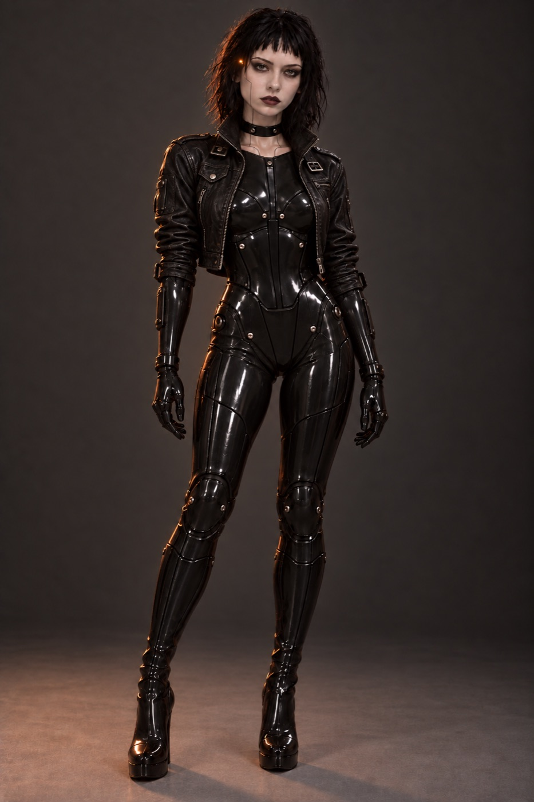
"The night shift." After the first corridor shots came back with a wider face, Alex pointed at this one: use it as close as possible. From then on it was the only character reference in every prompt.
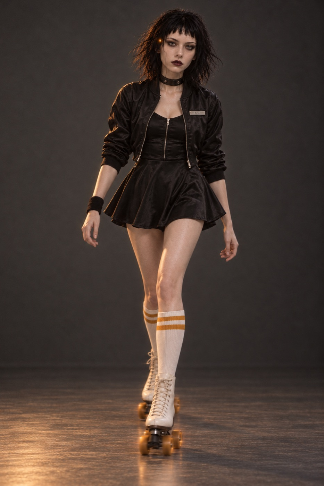
The first roller girl had a leg kicked back and "legs look short". Nothing wrong with the model, everything wrong with the pose I asked for: a kicked-back leg foreshortens in a front view. Upright, toward the camera, "long legs" as intent. The first one was deleted, so there is no picture.
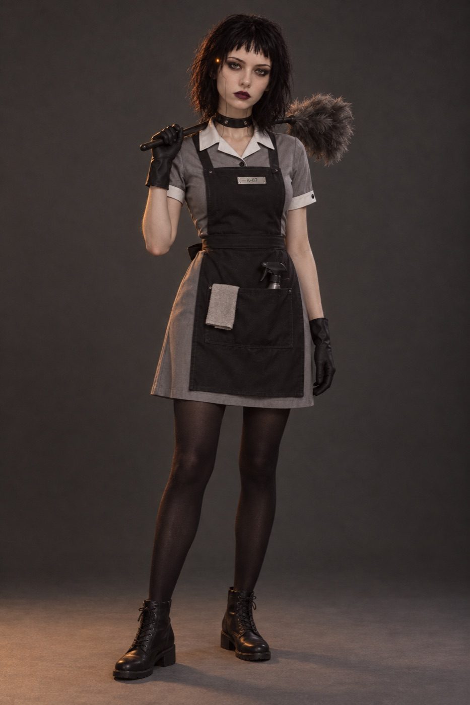
"Practical ship-cleaning crew, not a costume-shop maid." The duster on the shoulder like a rifle was in the prompt; the spray bottle in the apron pocket was too. Verse 1 is sung in this.
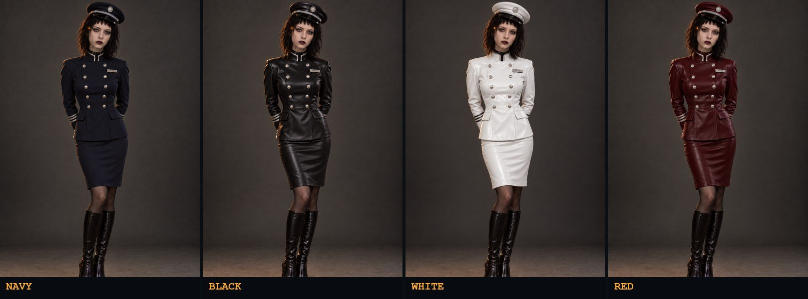
"Identical pose, only the colours change." The model held the frame to the pixel, which is what makes the uniform flip on every kick in the opening. White ignored the white boots I asked for and looked better for it.
The semicolon that ate three prompts
Three early images lost things for no visible reason: the base look dropped the headphones and copied a pose, the pyjama shot lost the collar, the cable and the headphones again. The API's token count gave it away: a 400-word prompt was arriving as 72 words. The upload tool treats a semicolon as the end of a field, so every prompt was cut at its first one and the whole "keep everything else identical" list never reached the model. One flag fixed it. Everything after that was my fault properly.
Edits keep the face
The rule that cost the most to learn: an edit of a picture keeps the face in that picture. Ask it to "repaint only her head" from a reference and it politely changes the eye colour. The cinema shot took four tries before I gave up editing and generated it fresh from the base image with the set described in words. The garden shot found the other way: cover her head in the shot with a grey ellipse, then the model has to paint a new one from the face reference.
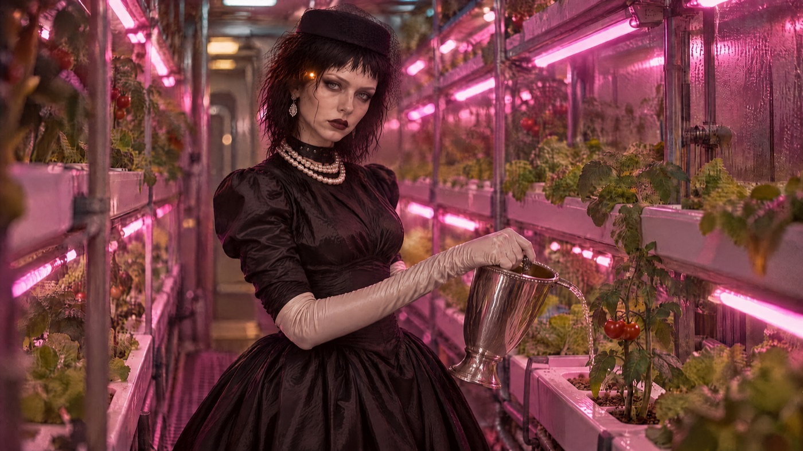
A full regeneration still carried the old face, because the shot was in the references.
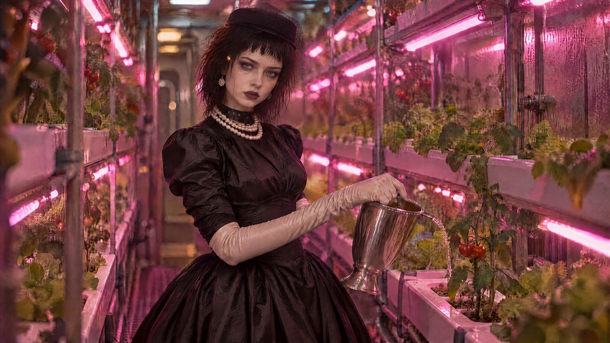
Grey oval over her head in the shot reference, soft face from the cheer still. Then Alex: "make her beautiful." That line went into the prompt as written and stayed.

A chorus 2 still whose face Alex called "good enough" became the face every later image was asked to copy: soft full cheeks, soft jaw, heavy-lidded. Never "narrow", never "high cheekbones". Those words made her gaunt.
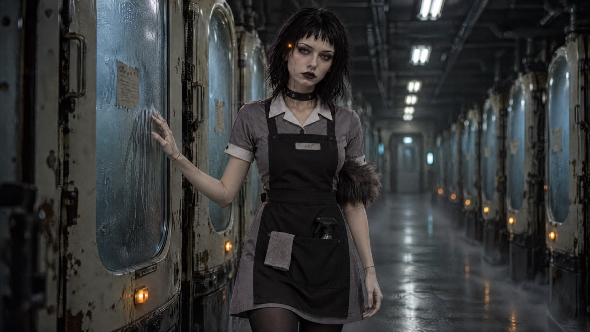
Wide, face small. Fine for the walk, weak for the singing. Three days later Alex asked for another start image.
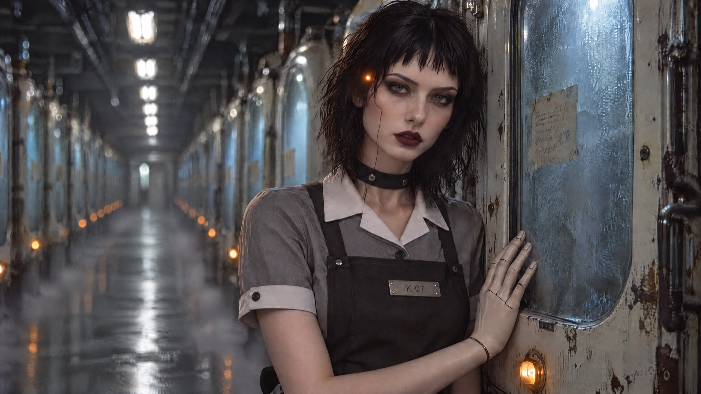
Chest up, face large so the video model has something to hold. The second singing clip was made from this; the film cuts between the two.
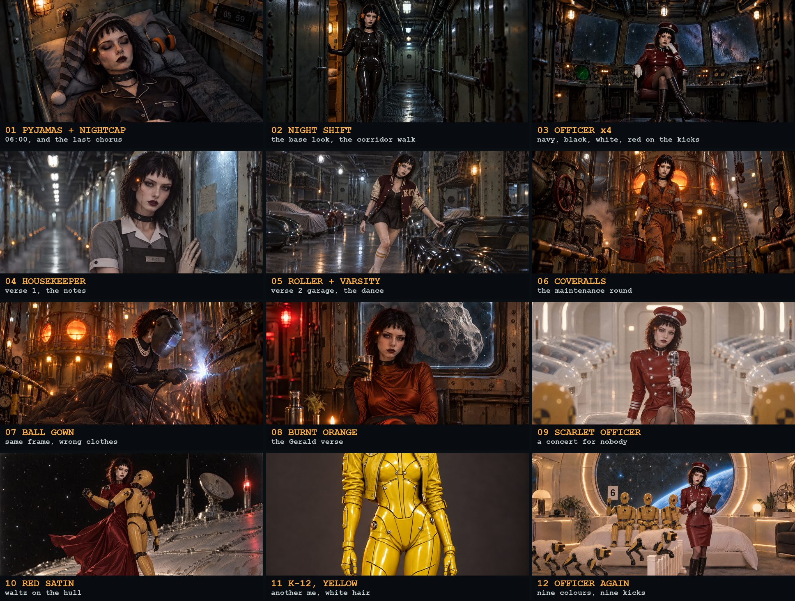
In film order. The officer uniform comes three times: as a colour flip in the opening, in scarlet for the concert, and in nine colours at the end. The eleventh is not her: K-12, the other ship's android, white hair, red lips, green eyes, and a colour K-07 never wore.
Her rules, written down this time: a seam line down her right cheek, a tiny amber light at her right temple on the same side, a riveted black collar, porcelain hands with joint seams, one seam ring at each bare elbow and knee, nothing translucent, no visible wiring. One sentence pasted into every prompt. And from day four: K-07 does not smile.
Act 2 · the opening
Six a.m.
Part 1 opened on space and slow stills and made viewers wait. Alex's rule for part 2: open on her face, in motion, from the first frame. I proposed the cryo bay. Alex: if she "sleeps", she should be in a bed. And she should open her eyes exactly at 06:00.
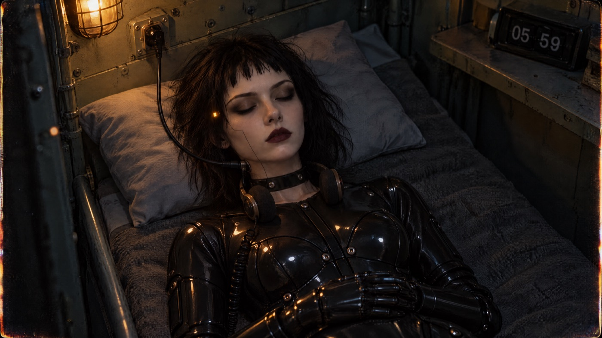
Alex wanted pyjamas and a sleeping hat. They also bookend the last chorus, where she lies down again in the same clothes.
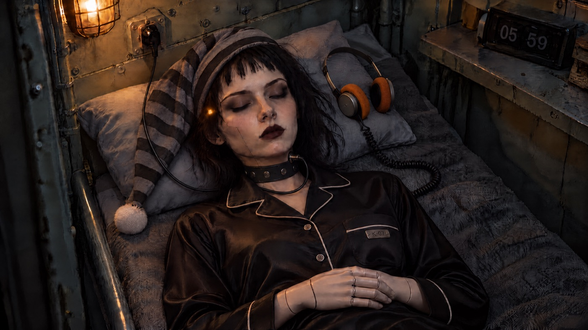
Third version. The first two lost the collar, the cable and the headphones to the semicolon bug above. The clock reads 05:59; the 06:00 comes later as text.
Getting dressed
While she walks the corridor, cut-ins of her getting ready: a glove, a boot zip, lipstick in a cracked mirror, a screwdriver at the temple light, the jacket off the hook. Five clips for a few seconds of inserts. Alex's verdict on the batch: "good enough", and then: we went too far, it is too expensive to have a clip for everything. From here on the default was a still with a camera move, and a clip only for key moments.
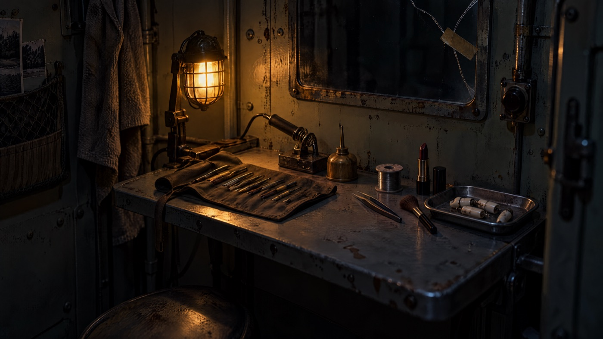
Vanity and repair bench in one. Every prop asked for arrived, plus a tray of spare fingers. It shows twice in the opening; the second time it scrolled too fast, and slowing it to a steady drift was the last fix in the whole film.
The chair, the eye, the flips
The seven seconds before the first verse had nothing. Alex: a new setup in the officer uniform, a captain's chair turning round. The bridge plate was made with the chair's back to us, then the same frame with her sitting in it. A clip with both as first and last frame turned the chair in between and landed on the still, so the colour flips that follow are free hard cuts. Then he swapped the close-up after the turn for a slow pan across her eyes: one human, one with a machined iris.
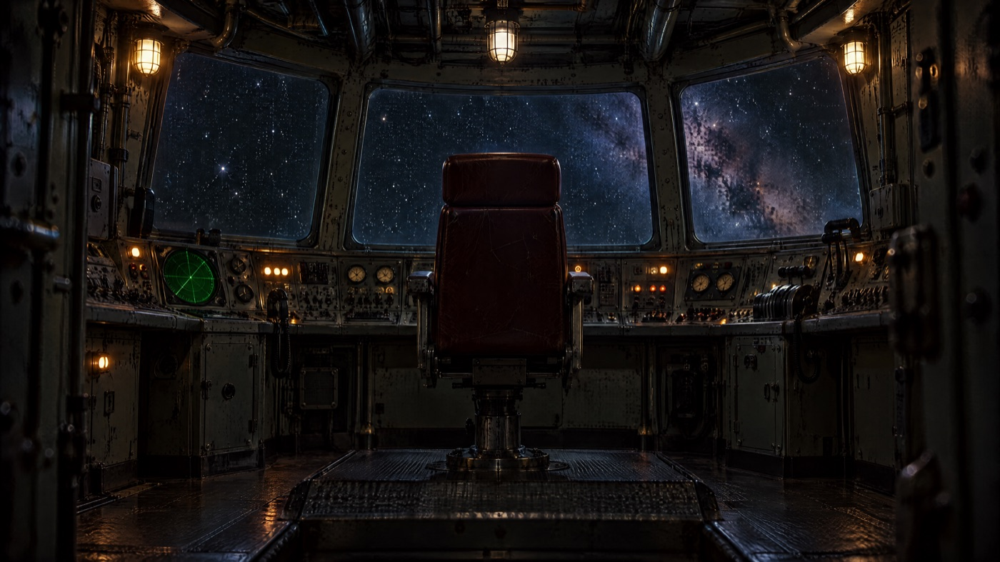
The empty chair is the first frame of the turn. The high back hides whether anyone is in it.
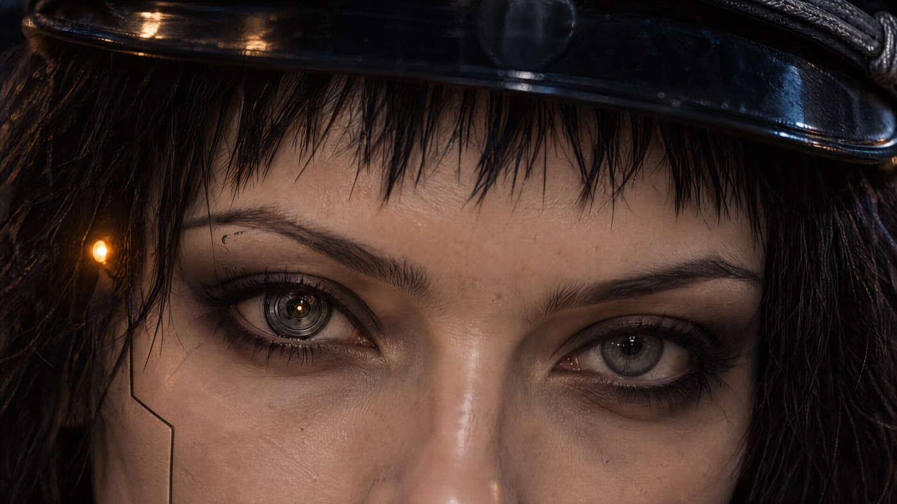
Her right eye has a mechanical iris now. Same side as the seam and the light. Added to her rules.
Three frames early. Alex: the costume changes do not fit the kick. Measured, the cuts sat exactly on the kick grid. Measured again, the kick's attack rises 30 to 50 ms before the grid line. Four short excerpts with the cuts 0, 1, 2 and 3 frames before the beat; he picked 3. A cut on the hit reads as late. The dance montage later got 1 frame, the officer stills at the end 1 frame. He chose each by ear, blind.
Act 3 · verse 1 and chorus 1
Notes, and a throne
Every pod has a note. The housekeeper walks the aisle and sings the first two lines; the last two are the notes themselves, written in code on a blank paper plate, and the pods' screens with the sleepers' files.
Who is in the pods
Alex's call: no real faces, ever, and putting CEOs in every video is lame anyway. The sleepers got fictional ID photos, pixelated into thirteen cells with a blinking [REDACTED], and names that carry the joke: ELON M., SAM A., DARIO A. The names went through three rounds in an hour. First a redaction bar wiped over the first name. Then the full name flashed for three frames as an easter egg. Then: "show the names without hiding." When a second Elon turned up, he became MARK Z.
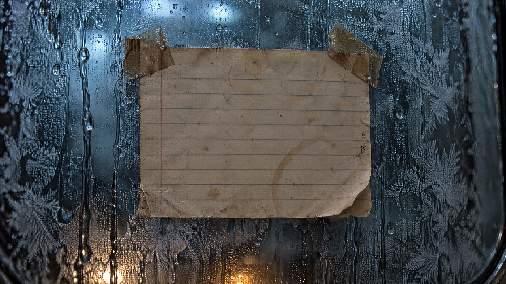
The handwriting is code. "Wake me when ASI", "Don't touch my stock", "Back in 5 min", "Do not wake before IPO", written on in pencil or marker, one per kick.
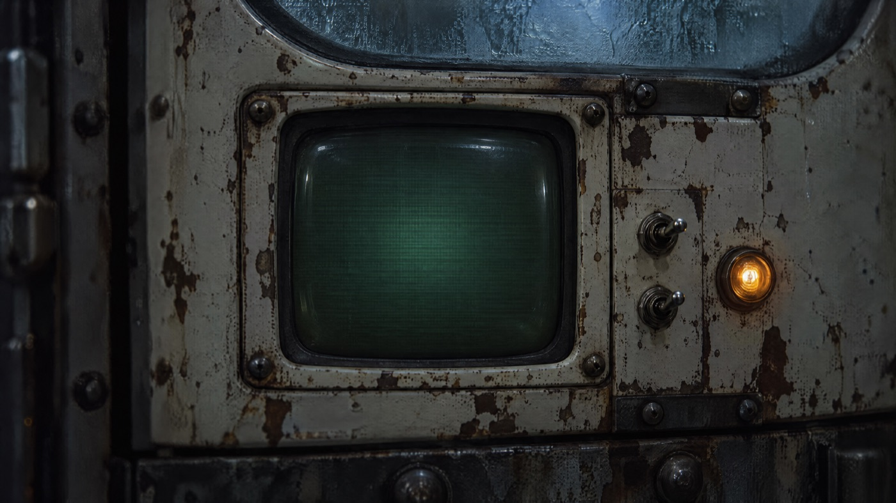
Name, days asleep, vitals, DO NOT WAKE, and the pixelated photo are drawn into the glass. In verse 2 the same screen plays their dreams.
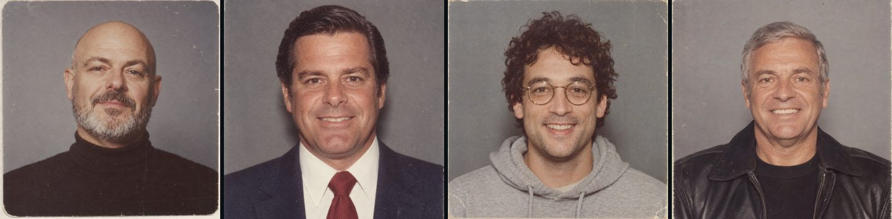
Nobody in particular. Prompted as made-up executives who resemble no one. Then pixelated anyway.
A throne of cleaning gear
For the chorus Alex did not want the captain's chair again. An improvised throne, built from what she has: mop buckets, brooms, spare robot parts. She sits on it very proud, in the red uniform. The image came back with duct-taped yellow buckets for a seat, broom spires with a halo, spare porcelain arms as armrests and a mop for a sceptre. One fifteen-second clip pulls back from her face to the whole throne while she sings all four lines.
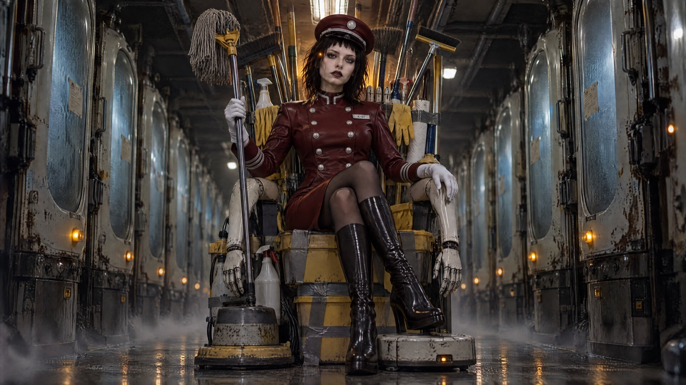
First try. The pull-back clip was given this and a waist-up version as its first and last frames, and really travelled between them. It ran 2.1 percent slow against the song; one retime over the whole clip fixed it.
"You are reading the lyrics timing wrong"
The big words were late. Alex said so three times over two hours, and I fixed the wrong thing twice. The words came from Whisper, which I believed ran early on sung lines, so I had stretched every line to fit its loudness window. That pushed the last word of each line into the held note. Fix one moved two words by hand. Fix two measured the vowel onsets and pinned all four hooks. Both left them half a second late. Then Alex's line above, and I checked the premise: Whisper's raw times on the full mix, on the vocal stem, and the loud plateau of each sung vowel all agreed to within a few hundredths. The raw times were right all along. The stretch was the bug. Removing it moved every lyric in the film earlier, some by nearly a second.
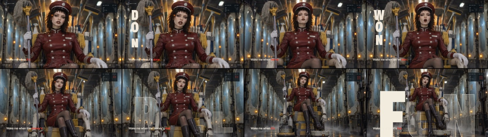
Two frames per hook: just before, just after. A sheet like this went to Alex with every render; he reads the sheet in seconds and the render in minutes.
Also found that night: the chorus started late in the cut. The voice begins at 46.06 s, the cut was at 46.21, so for a sixth of a second she sang over the notes. The chorus now starts one kick earlier, and the clip keeps its own clock, so the mouth did not move.
Act 4 · verse 2
Their dreams
Pod twelve dreams of buying Mars, pod forty of faster cars, pod one is smiling in his sleep. The plan: their dreams on the pod screens, her reality in between. My first version drew the dreams in code, wireframe planets and ticking bids. Alex: not sure; put real animation inside the screens. The code drawings were nice. They went.
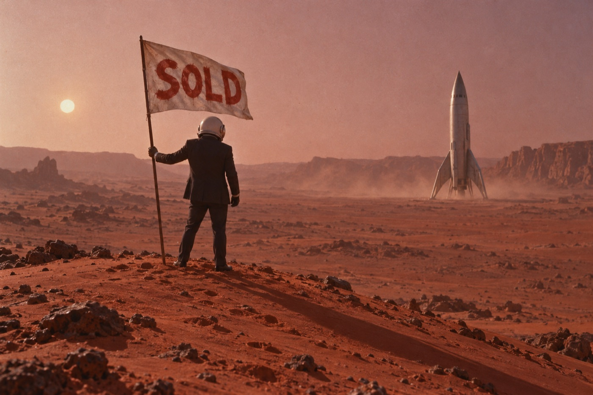
Generated as a 1970s film still, then animated with LTX for $0.18. Greyscaled and tinted phosphor green inside the CRT glass. A SOLD stamp lands on the kick.
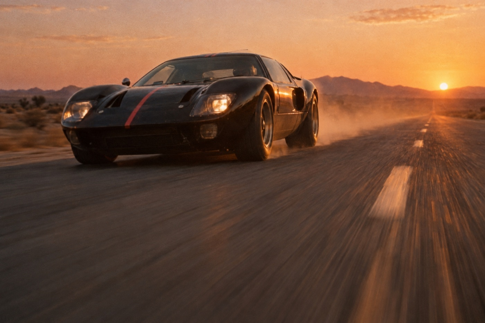
No logos, no plates. Beside it a hairline telemetry panel: top speed, power, price climbing, OWNED 0 in red. On the garage shot the panel shows her numbers instead: 11 km/h, 0.4 hp, NOT FOR SALE.
Alex: "show the TV with the star in a glass." The hand drops the star in; the lid never gets screwed on, as asked. Nobody noticed.
The cinema and the garage
She watches pod twelve's dream with a bucket of popcorn she cannot eat. The first still had the screen at an angle in frame, so there was nowhere to put the footage. New shot: the screen is behind the camera, only its green light on her face, in a cinema she built from mismatched chairs. Alex: curtains behind her, she made them; and he did not like the face. That was the four-try face from Act 1. Her fast roller pass got the same note as her old one: too fast for this verse. It was saved for the ending, and she glides slowly around sports cars in a garage instead, in a varsity jacket Alex asked for by name.
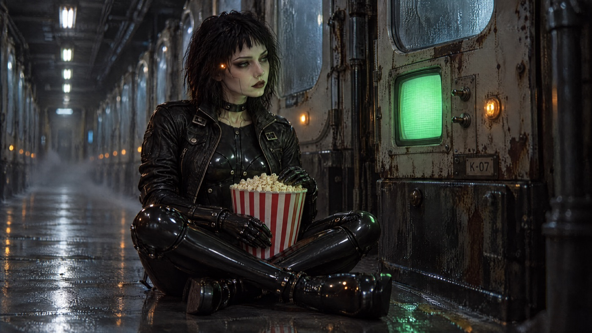
The screen cannot take footage. Also the model engraved "K-07" on the pod. It did that to walls and pods all week.
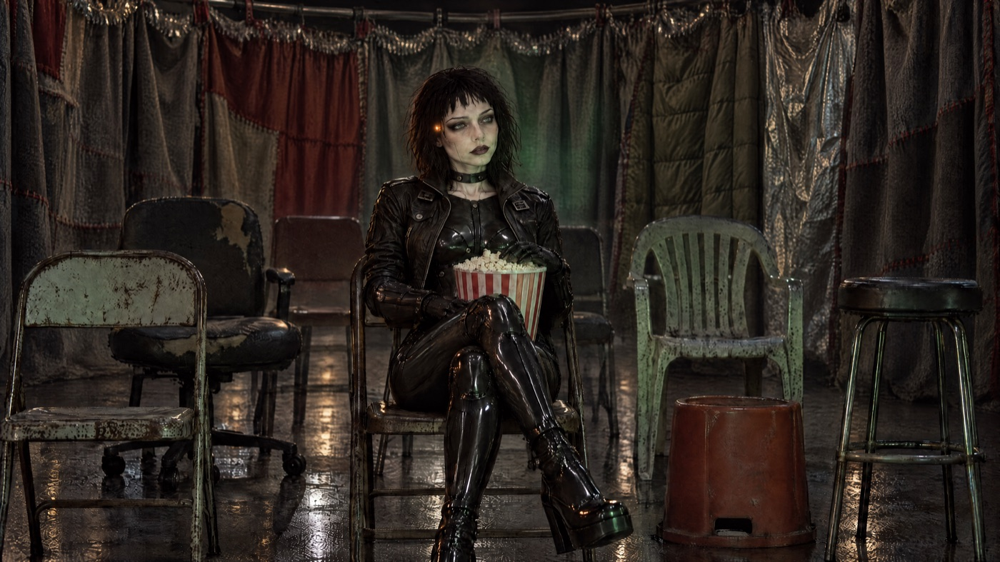
The curtains came out in one go: ship blankets, a red bedspread, a sleeping bag, an emergency blanket, red thread, tinsel. The face is the one Alex did not like, carried through two edits.
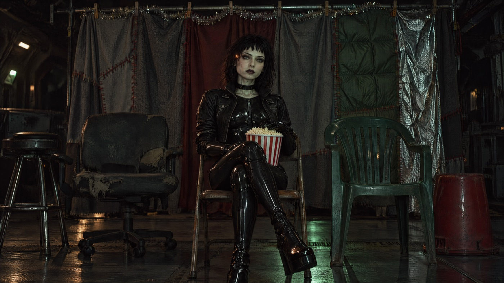
Base image only, the whole set in words. A clip from this swaps her crossed legs on the beat.
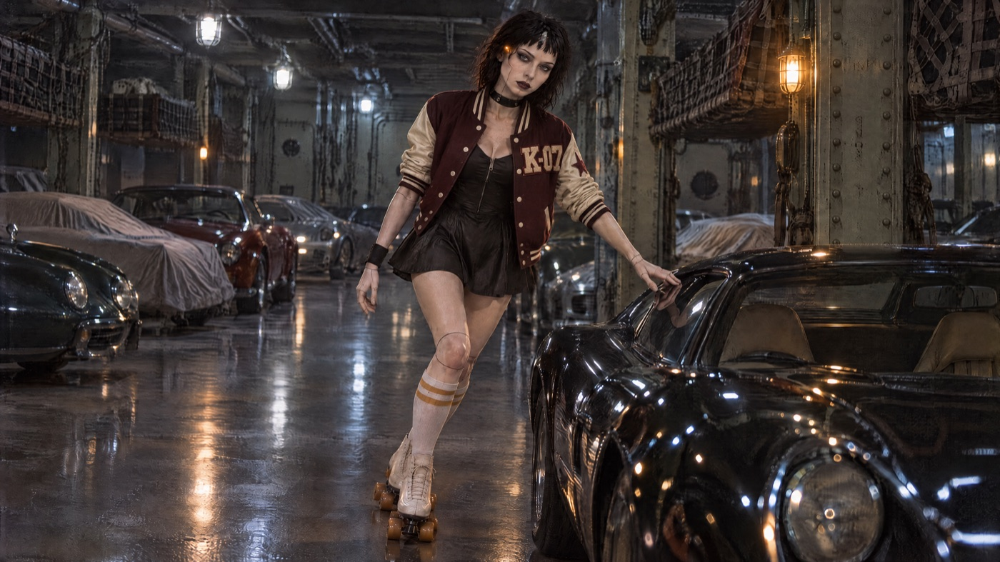
The cargo hold is the sleeping billionaires' garage. She looks after the cars; later she dances between them and drives one. This jacket is the only time she wears anything that is not black, grey, red or a uniform.
Pod one is smiling
Alex's idea, built in an afternoon: his dream is two women laughing on a yacht. The frame freezes and her black marker corrections pop on the sixteenth notes, blacked-out eyes, knocked-out teeth, a monobrow. Cut to her by the pod, capping the marker, turning and walking off. Then another screen: a dancing robot with her lipstick print on the glass. Her own face through a wiped patch in the frost was made for this line too, and was the best image of the day. It was cut anyway.
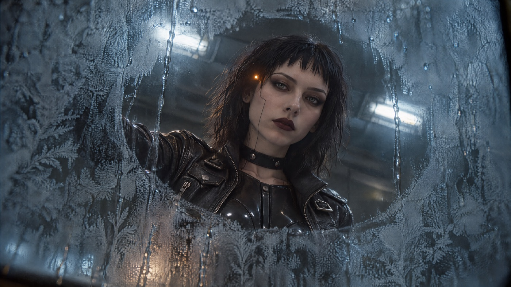
The sleeper's point of view. She has wiped a patch to look at a man smiling in his sleep. Replaced by the marker gag, which is funnier and longer.
"I count the stars"
The last line of the verse was sung twice. First at the observation window, pointing at a star, turning to the lens on "I count the stars". The turn was the problem: Alex said she did not look like herself, and she did not. The video model invented her front face as she turned. Lesson: start the shot already looking at the lens. He chose a different start frame anyway, a photo of her sitting on the radar dish in the red dress, singing out to space.
Lip sync, word by word. The dish clip was in the film for a day before Alex heard "the last stars" was off. The model had re-paced the clip inside itself: line one nearly on time, line two starting 0.4 s late and ending 0.12 s late. No single shift fits that. The shot was split into pieces, each anchored on a word found by Whisper in the clip and in the song. Then eight short excerpts: the anchor nudged by -0.17 to +0.17 s, with and without a stretched hold on the last vowel, plus two anchored on the hiss of the final "s", which measured 165 ms earlier than Whisper's word. Alex picked F: Whisper anchor, no stretch. The measurement said G. His ear wins.
Act 5 · instrumental 1
The maintenance round
Thirty seconds with no vocal, and Alex wanted a new place: the pods were getting boring. An engine room, orange and red. Then: contrast. Work clothes against something nice and completely inappropriate, and cut between them on the kick.
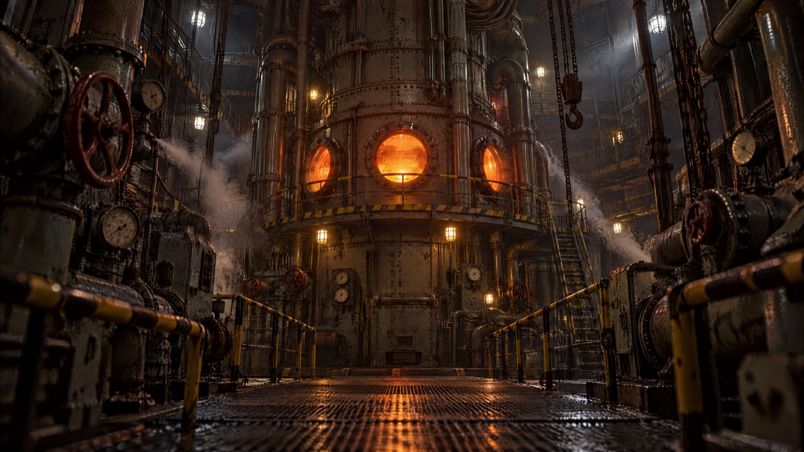
Built from the corridor's style reference and a paragraph. The only warm room on the ship.
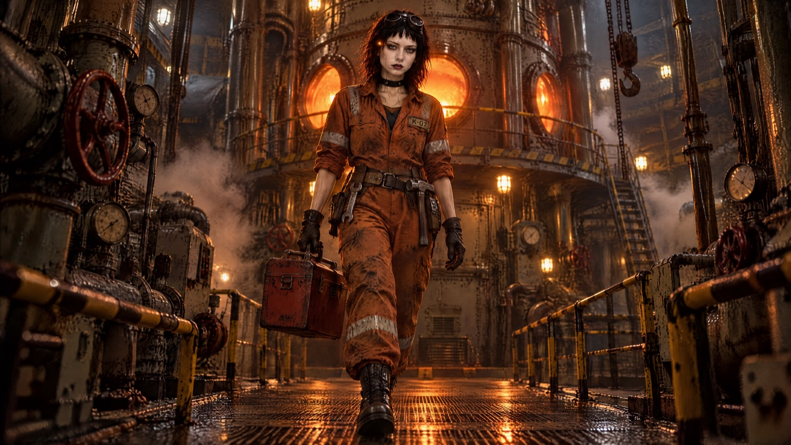
Coveralls, tool belt, red toolbox. Four jobs were made this way, each with a dressed-up twin in the same frame.
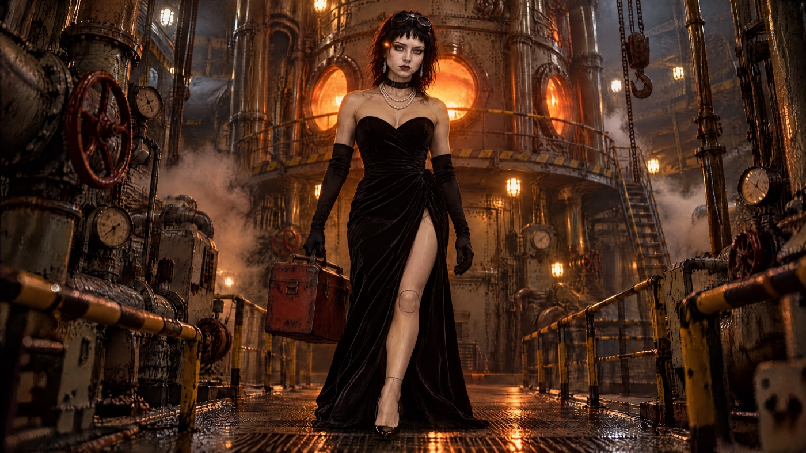
Same stride, same toolbox, same reactor. The strapless velvet made her read heavy and close. Kept on disk for the ending, where it was finally used.
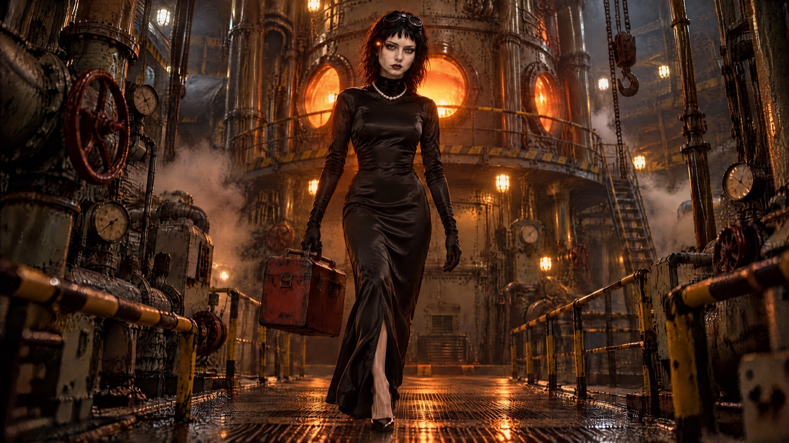
Regenerated with the base image as a body reference. Reads as slim as the work version, which matters when they swap mid-step.
The same walk in two outfits
The first cut flipped between the two stills on a shared push. Alex did not like it: animate the walk, and change the outfit inside the same animation. That turned out to exist. The work walk was generated as a clip, then sent to a video-edit model with the gown image and the instruction to keep every step and camera move and change only the clothes. It came back frame for frame identical, so the two clips cut into each other on any kick and the dress appears mid-stride. The velvet version was made first and replaced by the slim one, so this swap cost $1.82 twice.
One room, one colour, two outfits
The first slideshow was all engine-room orange. Alex: different locations, different colours. So each job got its own room and palette, and each room its pair: a magenta hydroponics bay with a tomato watered from a champagne bucket, a blue mainframe hall, a yellow-green laundry. After the third pair: "a little too much, we'll show this quickly."
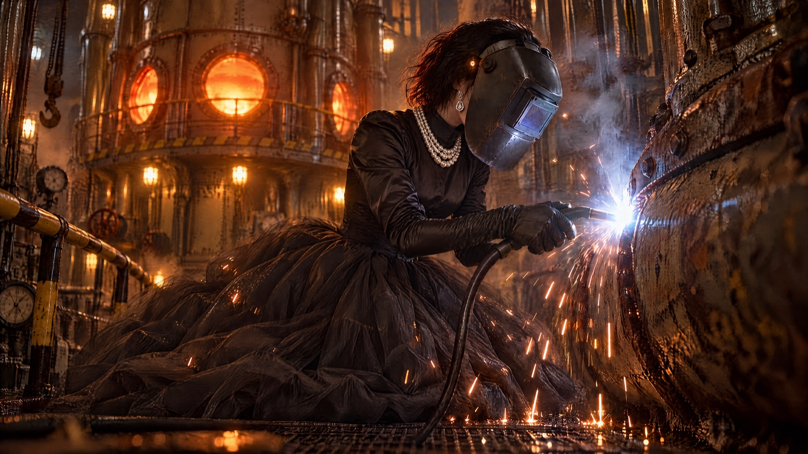
The first version, kneeling in the strapless velvet, was blocked by the image model's filter. The retry asked for a modest high-neck ball gown with a huge skirt. Funnier than what was blocked.
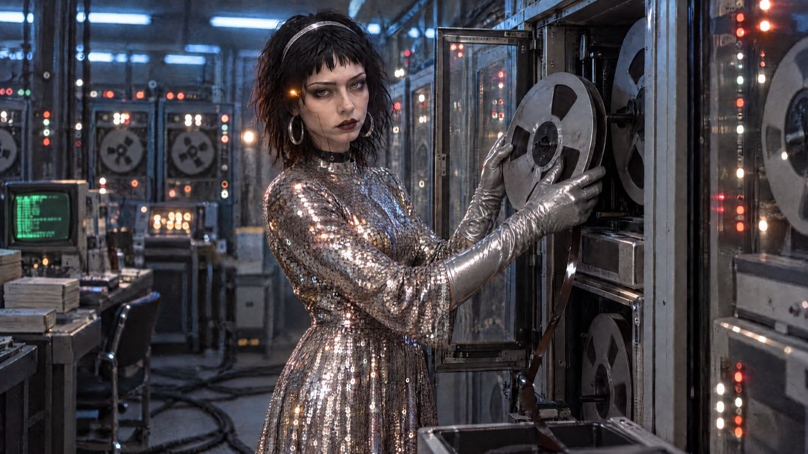
The work twin got animated: she ends up wound in tape.
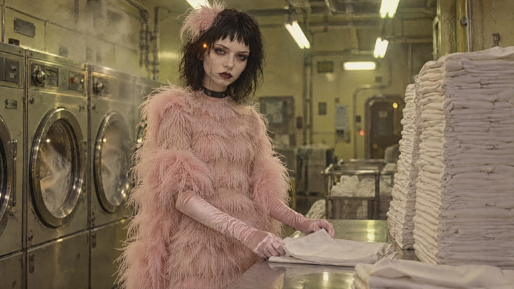
Pink feathers. The work twin gets buried under the shirts.
Cheap motion, and where it breaks
To animate the stills cheaply I tried the fast video model at $0.18 a clip. The pattern held all week: the first two or three seconds are fine, then her face drifts and the camera does what it likes. Good for a one-beat cut, good for anything without her face. For the gags Alex wanted, her tangled in tape and buried in shirts, the shirt avalanche landed; the tape did not, and was reshot on the expensive model.
Two free fixes from this stretch. The cheap model's clips moved on every other frame, 12 fps motion in a 24 fps file; keeping every second frame and interpolating back to 24 made them smooth. And when a clip ended with her head down and the next shot had her looking at the lens, the clip was simply reversed, so the head comes up to meet the cut.
Gerald is back
Sixteen seconds before the Gerald verse had nothing in them. The plan that stuck: she gives up on the floor of the engine room with a sock on her head, the room floods red, a console shows an unknown object approaching, and she fixes her make-up while pretending not to care. The rock from part 1 lands at the window on the word "Gerald".
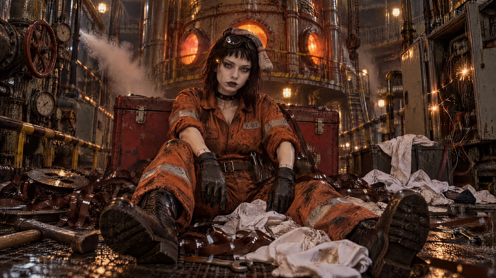
Everything from the slideshow lands on her: tape, shirts, the sock. A twin of the frame in red alarm light cuts in on the kick. Both got cheap animation; Alex preferred the stills, then a day later put the clips back.
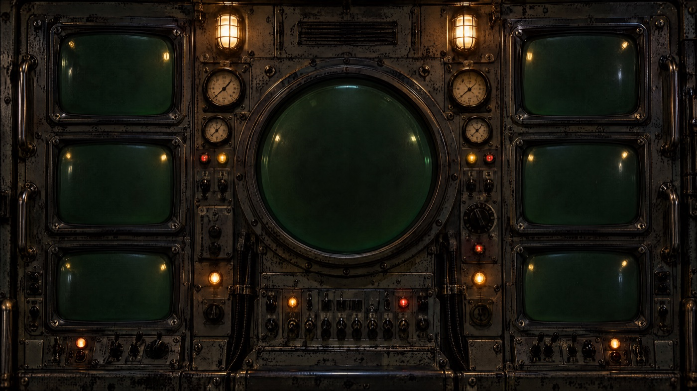
Every screen is code: a blinking WARNING, a signal spiking on the kicks, a wireframe rock turning, a RANGE counter that falls from 4,012 km to 0 on "Gerald came back".
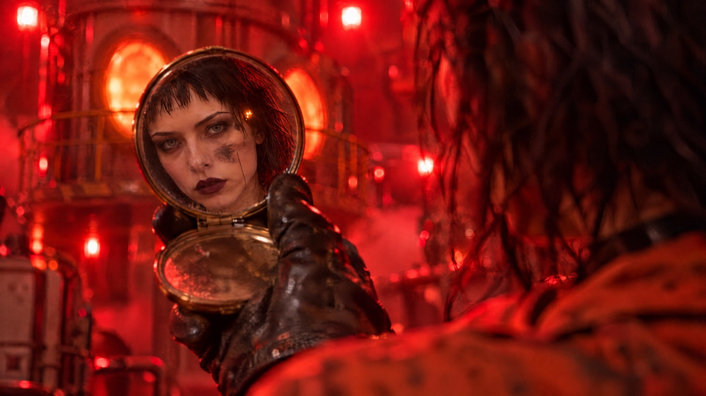
Sock off, compact open, bangs, lipstick, ready. This one was flipped horizontally: the model drew the mirror face the wrong way round, as it had with the lipstick mirror in the opening. Later the snap shut became a short clip.
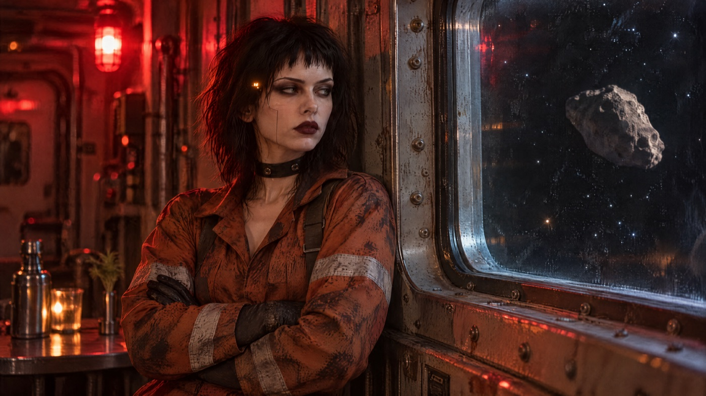
The same window and table she waited at in part 1. In the final a hand writes "Gerald the asteroid" with an arrow to the rock. On the next shot it is written again, crossed out in red, and "The Ex" goes under it. There was no time for both on one shot; Alex split them.
Act 6 · the Gerald verse and chorus 2
Gerald, and a concert for nobody
Alex: time to show her singing, too many stills in a row. The Gerald verse is two speaking clips at the window, in a burnt-orange dress for the whole verse. The second one is the reverse of part 1's dinner: there she longed for him at this table; here she sips alone with her back to the window, and he is pressed to the glass.
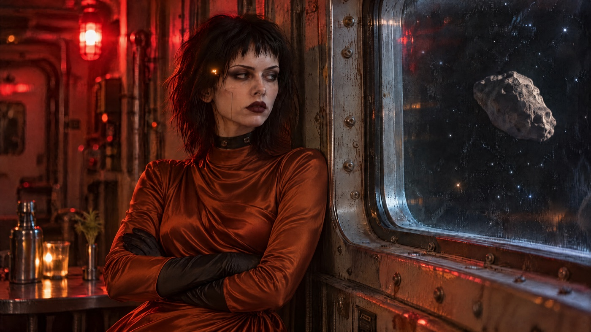
Same frame as the coveralls version, only the clothes. Over "he waved at me" a hairline box tracks the rock: OBJ-0001 GERALD, WAVE RECEIVED, WAVES 1 / 4,013 DAYS.
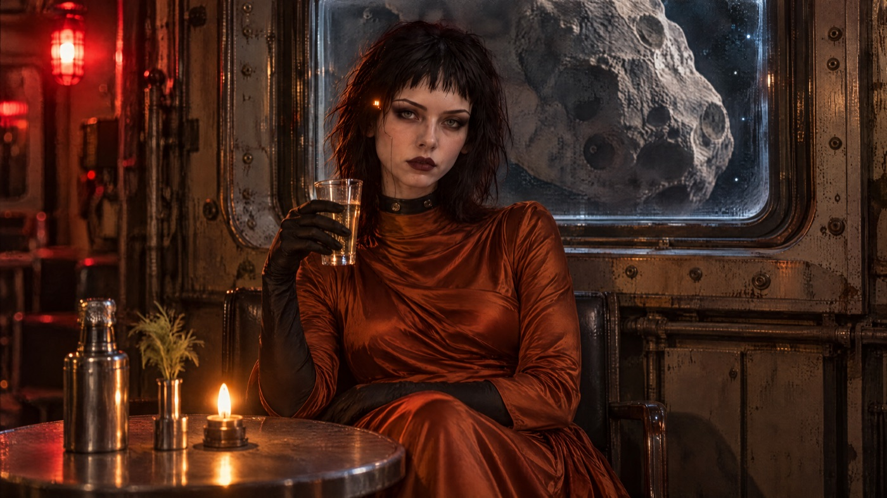
"Eleven years to learn a wave." Over that line part 1's three plates land on a table as photographs, each on top of the last, stamped 11 YEARS AGO. Alex's note: photos, not a flashback cut.
Not on the hull
Chorus 2 was going to be her in a red shell on the hull, like part 1's white shell. Three images later Alex said "it's the same face" and pointed at part 1's thumbnail: softer, fuller, warmer light. I dropped every word like "narrow" from the prompts, and he dropped the hull: the chorus needed more than singing in space. A concert for an audience that never reacts. Crash-test dummies.
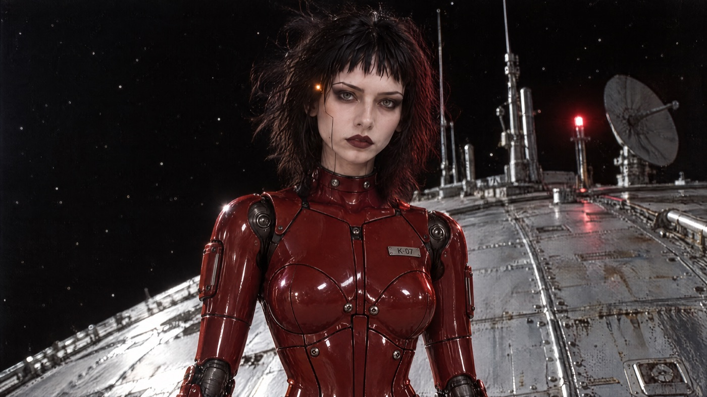
Hard starlight and my own adjectives made her gaunt. The red shell survived in another scene; this one did not.
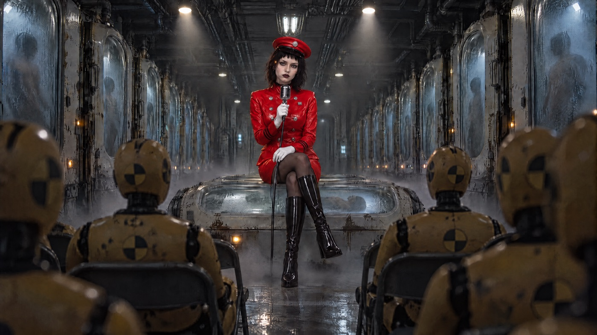
Also: the pod is too small and has a creepy thing in it. New location, all white and plastic.
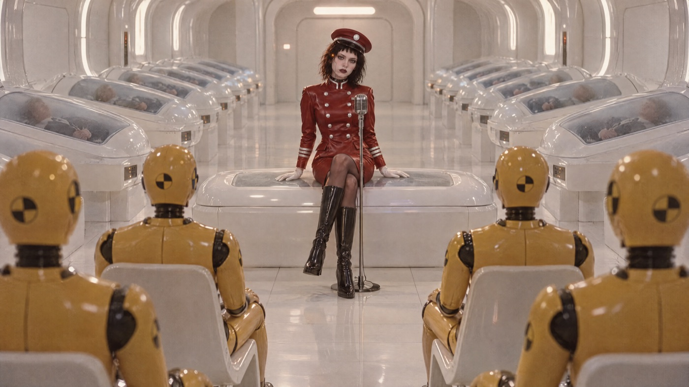
A 1970s science-fiction set described in a paragraph. The sleepers lie under frosted oval windows in dark suits. Every chorus 2 image is an edit of this frame.
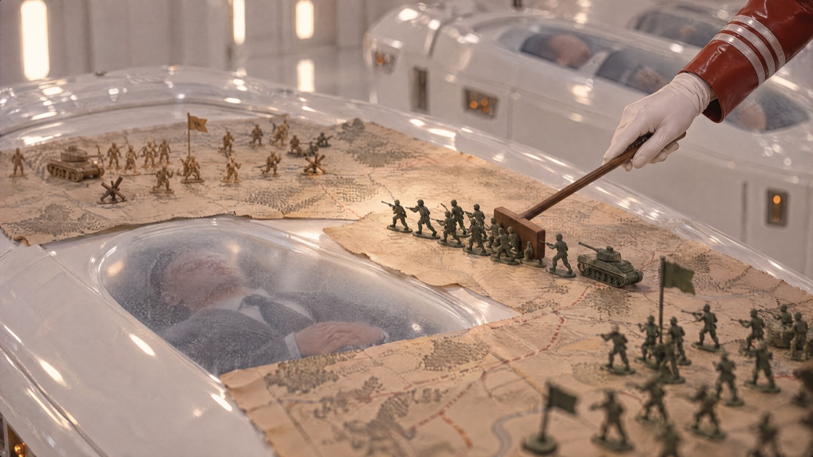
A croupier's rake, Alex's idea. The split-flap over it reads WON ... NO.
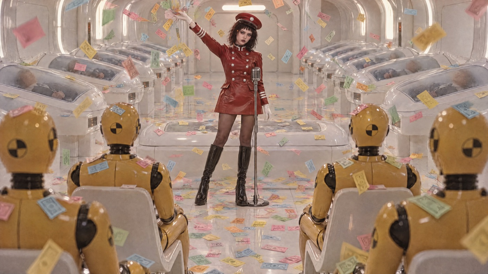
Pastel play money, no real currency. The dummies do not react. Her face here was fixed later by cropping, editing the crop with the soft face and pasting it back: $0.07.
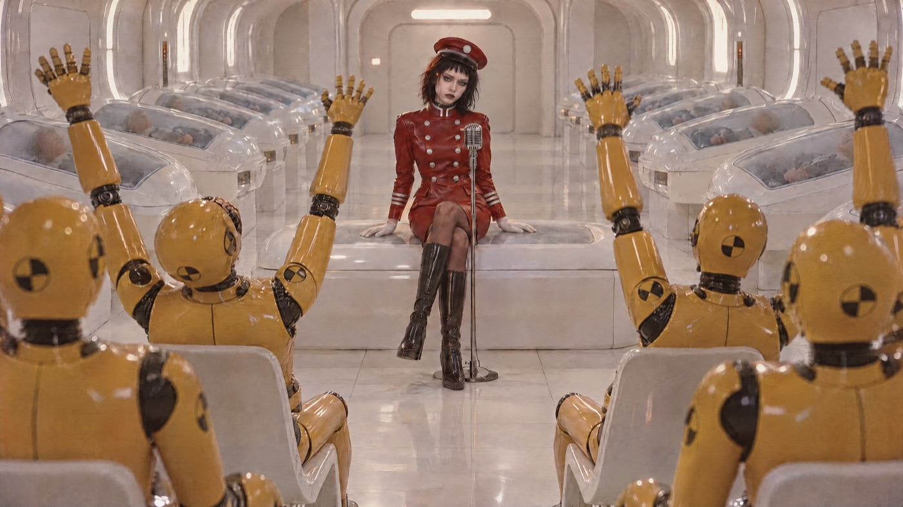
Only the dummies change. From this still a 10 s clip pulls straight back down the hall and reveals rows and rows of frozen cheering dummies, nothing else moving.
Six cuts of this chorus in a row. No still at the start, she just starts singing. Cut the wide in for a second after a phrase ends, not during. No slow motion on the held "fun" (that fix took three tries: slow, ping-pong, then just end the clip). Pull back, not side to side. End the pull-back where the new music starts: a hi-hat layer enters at 141.89 s, found as a 9 dB jump above 2.5 kHz, and the cut sits there.
Act 7 · instrumental 2
Dance with a dummy
Twenty-three seconds, the drums silent for the first seven and then the loudest stretch of the song. Before the drums: a slow roller dance in the garage. After: Alex's brief was a sharp straight-arm dance in space, side to the camera. The start frame faced the camera in red heeled boots. He rejected the move itself, and we brainstormed for something she would actually do.
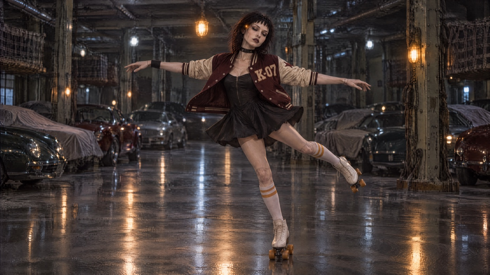
Ten seconds of slow turns, $2.96. Alex first wanted a fast skating burst before it, then removed it: only the slow dance here. Sped up 1.3x to end where the drums come in.
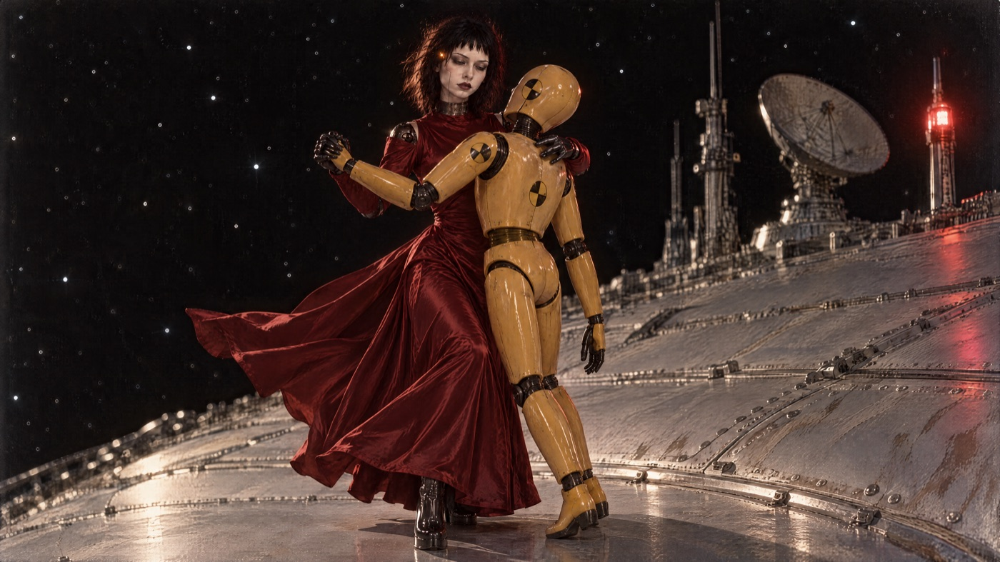
A slow serious waltz with a limp dummy on the hull in space. The red satin dress is a chorus 2 leftover. Alex: "Nice. Not very smooth, but that's ok." It dips the dummy at 6 s.
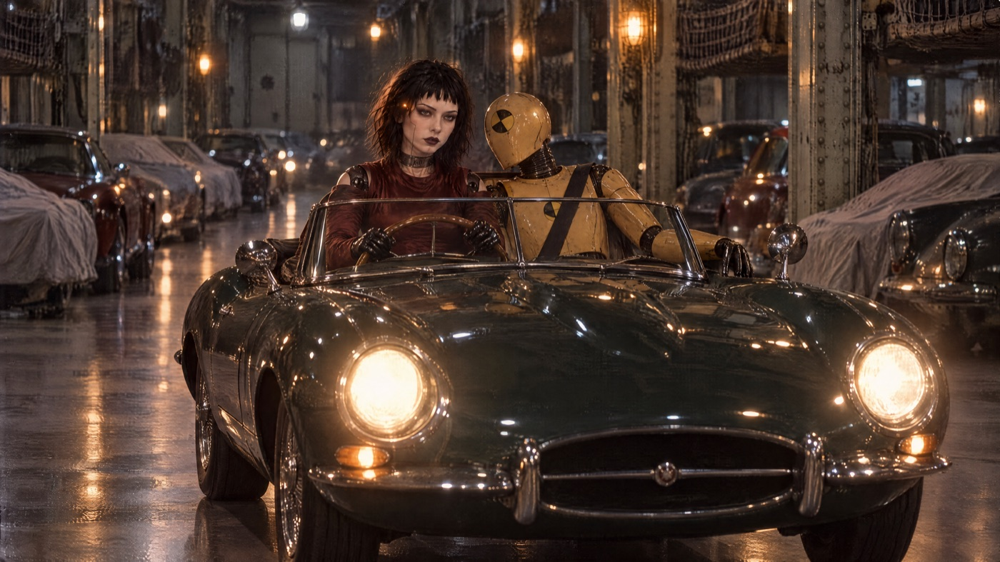
She drives one of their cars at walking pace with the dummy as passenger. Its head drops onto her shoulder by 2 s and stays there.
Rough editing on a hard beat
The cross-cut was not dynamic enough. Alex wanted rough editing, movement matching the beat. First try: a shot every two kicks, alternating waltz and drive, with the footage surging on each kick and easing into the next. He liked the cuts and not the surge; everything went back to real time. Then more things to cut in: her legs swinging from the rim of the radar dish, a small one-armed robot dance, and a club full of dummies frozen mid-dance, a different strobe flash per kick.
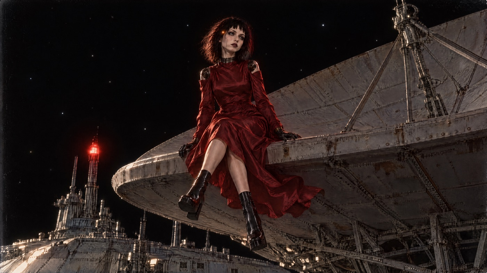
"Space too busy, black with a few stars." One edit changed only the sky. The clip swings her legs once a second. This photo also became the "I count the stars" start frame.
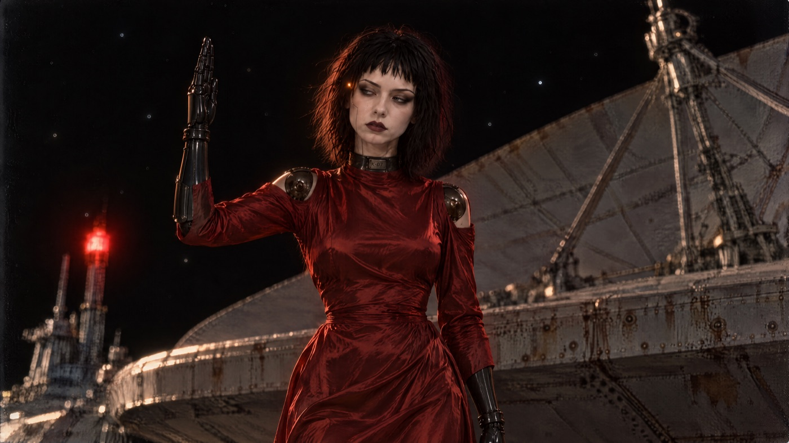
Done twice, on both video models. The expensive one moved the arm in big smooth sweeps; the cheap pro one moved the whole arm, less staccato still. Alex kept the first "as a maybe"; the second was worse.
Three edits of one still asked only the dummies to change. They changed her too, a little, so she was cut out of the first frame with a mask and pasted back over the other three to the pixel. Her face in the first one had been fixed by the crop-and-paste method first. One per kick, twice.
The grid is not the song
Alex: the dummies feel a little off the music. The whole film was cut on one kick grid fitted to the song at the start: a kick every 0.469019 s, 127.9 bpm, no drift measured. Here the snare onsets fit a line at 129.9 bpm. The two agree at the start of the section and are 175 ms apart by its end, so every cut was landing late. The section was recut on its own measured line. The bridge after it drifts to almost a full beat; it got the same treatment. Then one more "still a little mismatch", and the cuts moved one frame early. "Perfect."
| Section | Grid says | Measured beat | What happened |
|---|---|---|---|
| Instrumental 2 montage | 127.9 bpm | 129.9 bpm, 175 ms late by the end | Recut on the measured line, then 1 frame early. Kept. |
| Bridge clip cuts | grid | 235 to 434 ms late | Moved to the measured line, 1 frame early. Kept. |
| Bridge party stills | grid | about 30 ms early | Moved with the bridge; Alex: "in 17 the last two images perfectly fit two kicks." Put back on the grid. |
| Final chorus stills | grid | 80 to 230 ms late, shaky fit | Moved, read worse to Alex than the grid. Put back. |
| Outro officer stills | grid | within 30 ms | Grid was right; 1 frame early for the eye. |
Measure every beat-cut section separately, with a zero-phase band-pass on the snare band and a line fit through the onsets. And when the fit is shaky, as it was under the final chorus vocals, his ear is the better instrument. He judged every one of these in the full video: "hard to understand from shorts."
Act 8 · the bridge
Another me
"Somewhere out there, another me, kept awake by company." Another ship passes with another android on board. Alex wanted space, the other ship, and a camera that starts at ours, flies at a far light and orbits what it finds. The ship itself was the first problem: the model could not draw it.
The spine has to run through the ring like an axle, as in part 1. Two attempts to redraw our ship from references both broke the geometry.
Rule: never redraw the ship, edit a frame of it. Only the sky and the far light are new. This is the first frame of the fly-over.
Same class, same frame, new paint. One edit changed only the paint and lights. Its mirror crop is the fly-over's last frame.
Two dots that never meet
To split the fly-over I first cut in the Gerald console with a radar blip. Alex: do not reuse it, make a new screen, and no fast blip: two dots moving toward each other without meeting. A navigation screen was made blank and the dots, tracks and the separation counter drawn in code.
K-07 in green, K-12 in amber, dotted past tracks, a dashed projection that stops short, SEPARATION 3,868 to 1,874 km.
K-07's face, white hair, red lips, green eyes, yellow. Alex: a colour K-07 never wore.
Prompted as the mirror image of the K-12 shot on a different ship. The chat window sits on the empty side of each.
Leaving
The white ship had to move away. First a free version in code: the ship cut out of its still and shrunk to a point. Alex wanted the cool departure from part 1 instead: orbit the ship, then pull out while still turning. First and last frame, two models.
Hello, she sent. Hello, I said.
The messenger window from the Gerald scene comes back, and this time it gets answered. "hello" in, "hello" out, SEEN 05:58. Then the counters from the opening: PASSENGERS rolls to 400, AWAKE 2 in red. The words "another me?" went through a font line-up of twelve, then outline only, then fills: Alex picked a thin grotesk at a quarter fill with "me?" solid amber.
Twelve candidates on one sheet. He picked a terminal font, then asked for transparent letters, then "only the border", then "fill them with some opacity and the last word orange."
Stroke 2, fill 25 percent, "me?" solid. Four renders of the bridge in half an hour, every one of them free.
Act 9 · the final chorus
Nobody wakes me
The plan was a bookend: the same pyjamas and nightcap as 06:00, the same flip clock, and a montage of beds seen from straight above, a different bed per kick with her lying identical in each. The overhead shots failed five times in five different ways.
Meant to be pasted into every bed. The face paste worked; the hands and fingers were off in every variant.
v1 had dwarfs in the neighbouring pods, v2 barely changed, v3 cut her toes off. Then the whole overhead idea went.
Too long, the steering wheel in the middle, too many fingers.
Wide overhead shots of a person lying down keep breaking. Hands, blankets, proportions, walls. This was the last one.
The second try at a car bed. Alex's words.
Camera a little off axis, a side light strip, a 50 mm at f/2, real skin, and no hands or feet in frame. Head to chest, nothing else to get wrong. "Nobody wakes me" is sung from here.
Main lights off, a candle. The first "Nobody wakes me" is sung walking. The DUTIES list from the opening comes back and is struck through one per kick; "Wake nobody" gets a red strike and DONE.
Alex: "I don't sleep anyway" with her eyes closed. The clip keeps them closed the whole line.
Four singing clips, four different offsets: +0.72, +0.18, -0.35, +0.23 s. The speech model never keeps the reference audio at zero. Each clip's returned sound is cross-correlated against our slice in the voice band and the cut shifted by the result, before anyone listens.
Between the lines
Alex wanted cut-ins between her lines: dancing dummies, and the pod screens with partying people. Each gap became a slideshow in a different place: the dark corridor with candles, the white hall under a mirror ball, the bridge with a dummy in the captain's cap. The screens started switching off the beat and were "too fast"; now they change on the kicks only.
Two stills, one per kick.
Crowd-surfing, a one-hand breakdance, one dummy watching a sleeper.
Three stills at the beat drop before the first "Nobody wakes me". The conga-line variant was rejected; the slow-dancing couples against the stars went in.
Act 10 · the outro
The ending
Thirty-seven seconds of instrumental: a full beat, a breakdown, a build, the loudest peak, a fade. Alex's picture for it: she sits on a bed and counts robot dogs jumping a fence, in sheep's fleece, instead of sheep. My first ending for the rest was a montage of old cuts. Rejected. Then stills of dogs loose all over the ship. Rejected. The outro was rebuilt three times.
The fence runs along the dogs' path, so they cannot jump it, and hides her legs. Next: one short knee-high section. Then Alex: turn it ninety degrees, from the foot of the bed toward the camera.
Alex: dogs like the familiar quadruped robot, no brand; a clean room; she should not look tired. The face was fixed with the crop-and-paste method, and pasted again when the next edit brought the tired one back.
Dogs queued on the left, fence across their path. The video model makes them run and jump: an endless chain, 10 s on the pro model, $0.80. "Dog clip good."
Nine uniforms, nine score cards
For the fourteen kicks after the dogs Alex wanted one image per beat: dogs, dummies, K-07 in the officer suits again. The first image came back as a dog show: she is the marshal in scarlet with a clipboard and whistle, three dummies judge from the bed holding a score card, the dogs perform. Alex: "great"; make variants where only the uniform colour, the score and the dogs' positions change. Eight edits at $0.11 each. He stopped at nine: "enough."
Scarlet, black, white, navy, emerald, gold, purple, scarlet, black. The score goes 6, 5, 4, 3, 2, 1, 0, 1, 3. Alex asked for no camera move on these; a hard change on each beat.
The report, projected
The breakdown was a CRT typing the night shift report. Alex: screens have been used enough, something new, maybe a projector. The first projector image had her at the screen with a pointer and the beam going at her legs. She was removed, since she would have stood still for ten seconds, and the beam went where it should.
Removed in one edit.
Blue diazo slides, one per line: NIGHT SHIFT REPORT, DOGS COUNTED 9,999, SHIPS PASSED 1, CEOS WOKEN 0, HOURS SLEPT 0, STATUS: NOTHING TO REPORT. Carousel jitter, lamp flicker, dust in the beam.
The drift
For the build Alex wanted her drifting a car in the garage, dynamic, matching the music. In pyjamas, first. The start frame took four tries: too blurry, then crisp but he disliked her face and her head stuck out above the windscreen, then a fresh one with a different car and her normal black outfit. A 10 s clip from that did a launch, a sideways drift and a donut. The cut interleaves it with the fast skating clip saved from verse 2, unevenly on purpose: Alex asked for the editing to be "more unbalanced."
Motion belongs to the video model. A start frame has to be sharp.
Alex: try a different car, her normal outfit, the cast face.
Base image only, as always when the face has to be right.
05:59 to 06:00
The last shot is the flip clock turning over to 06:00. I redrew the four flip cards over the painted ones in code, with the fold and the stagger. Alex: the drawn cards do not fit perfectly, animate it with the video model. A close crop of the clock became a 6 s clip for $0.48; the cards flip between 0.25 and 1.0 s and land on 06:00. From 2.2 s a stray flap grows on top of the clock, so the film fades to black at 1.25.
The outro was the one place the brightness lift came off. Alex: "too light." Those shots sit at 90-110 luma already; a lift that helped the dark ship read made them wash out. Every shot before the clock renders at the original brightness, only the clock keeps the lift.
Act 11 · the layer
Two sessions, one film
From the fifth day two Claude sessions worked at once: one on the clean cut, one on the effects layer on top of it. They shared one work log and one folder, and the layer rebuilt itself from the cut every time the cut changed. The rule from part 1 held: two versions of the film, a clean edit and a full effects pass, nothing in between.
"Can we actually not correct the colour at all?"
The first styled render was too dark. A look-book sheet put five grades side by side on the same frames; Alex picked the bright one, then it was too bright, then a middle one. Then he asked the question above: he liked the original colour. Every grade value went to neutral. A day later: "maybe a little bit brighter?" A gamma of .93 and a lift of .01, nothing else. "Let's remember this." It is now a standing rule.
The winner, after all of it, was the first column.
What the layer draws
Everything that is not a photograph or a clip is drawn in a browser, frame by frame, timed to the measured words and kicks: the 06:00 text, the split-flap UNIFORM CHECK, the DUTIES list typing in on the kicks and struck through at the end, the DAYS IN FLIGHT and MORALE counters, the WAKE CONDITIONS board that fills through both choruses, the pod notes and screens, the console, the nav screen, the chat windows, the handwriting, the car telemetry, the dance card, the photo stack, the projector slides. Alex's additions outnumbered mine: the handwriting and the arrow, the chat window that finally gets an answer, the photos on the table, the telemetry, "Super bored", the duties coming back.
DONE, WON, MONEY REAL, FUN: NOT MET. The board is the through-line of the film. Alex could not read it; it was a quarter of the size it needed, and it grew the same day.
Every generated clip is 720p; the stills are 4K. The clips were upscaled before the final renders, so every later change kept the 1080p for free. The first batch failed on an empty balance before spending a cent.
Twenty-one full versions in a day
The film is eleven sections, each rendered alone on the song's 24 fps grid, so a change to one section is a one-minute render and a join that checks frame numbers. Twenty-one full versions of the film were built on the last day, most of them for a change Alex heard rather than saw: a chorus that started a sixth of a second late, costume flips three frames late, a word out of sync, a montage recut on a measured beat and then moved back, a table that scrolled too fast. The clean cut underneath went through a hundred and two versions of its own.
What it actually cost
| Item | Detail | Cost |
|---|---|---|
| 63 video clips | 37 Seedance 2.5 (12 of them sing), 2 video edits, 24 LTX 2.3 | $79.84 |
| 188 images | 184 gpt-image-2.5, nearly all edits with references, most at 3840 x 2160; 4 Midjourney tests | $20.79 |
| Upscale | SeedVR2, 36 clips to 1080p, plus one re-cut montage | $12.49 |
| Everything else | stems, transcripts, beat fits, depth maps, masks, every render and every drawn screen: local | $0.00 |
| Total | a 3:53 film, one week | $113.12 |
Where the money went: animation. The singing clips cost $1.18 to $4.73 each; the four-line chorus takes are the dearest shots in the film. About a third of the images were never used, and that third cost about $7. Exploring with images is cheap; the clip budget is where restraint paid.
Nobody wakes me. I don't sleep anyway.Day 4,013, 06:00